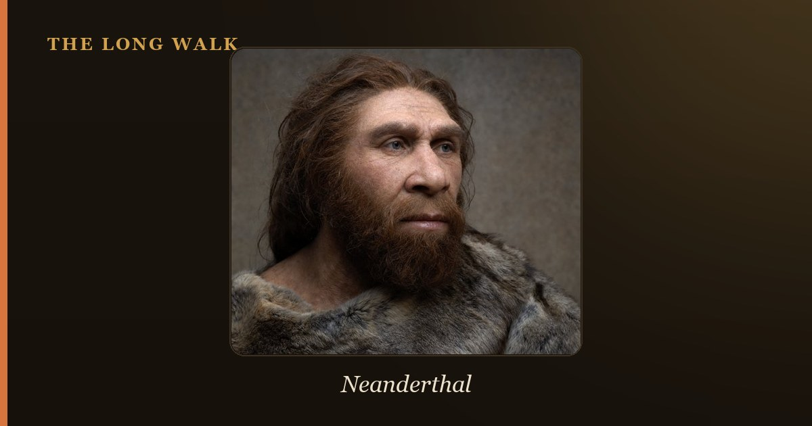

The Levallois technique used deliberate core preparation to produce flakes of consistent, predetermined shape and size. Widespread from 300,000 years ago onward, it defined the Middle Palaeolithic and appears strongly in both Mousterian Neanderthal toolkits and African Middle Stone Age assemblages, marking a leap in planning ability and mental templates.

The Levallois technique is a method of stone toolmaking in which the knapper shapes the core before striking off the flake, rather than striking at the stone randomly and hoping for a useful piece. This prepared-core approach required envisioning the finished product in advance and executing multiple preparatory steps to guarantee success—a cognitive benchmark that separates it sharply from simpler flaking methods. The technique defines the Mode 3 toolkits of the Middle Palaeolithic and is central to understanding how early human minds worked.
Named after the Levallois-Perret suburb of Paris, where 19th-century archaeologists uncovered striking examples of prepared cores, the technique spread across Africa, Europe, and western Asia. It is most famously associated with Neanderthals and their characteristic Mousterian toolkit, but it also appears in the African Middle Stone Age, shaped by Homo sapiens ancestors. From around 300,000 years ago onward, Levallois flakes and points became the hallmark of planned, efficient toolmaking.
| Feature | Simple flaking (Oldowan) | Levallois (prepared core) |
|---|---|---|
| Core preparation | Minimal; strike edges as you find them | Extensive; trim edges and shape platform carefully |
| Predictability of flake | Unpredictable size and shape | Predetermined size, shape, and sharpness |
| Planning required | Strike and see what happens | Mental template of the finished product |
| Period | 2.6–1.0 million years ago (Oldowan) | 300,000–30,000 years ago (Mode 3) |
| Main makers | Early Homo, Australopithecus | Neanderthals, Homo sapiens ancestors, some early modern humans |
| Typical products | Simple flakes and choppers | Broad, sharp flakes; hafted points for spears |
| Cognitive demand | Low; immediate reward | High; delayed reward, multi-step plan |
What is the Levallois Technique?
The Levallois technique is fundamentally about control and foresight. A knapper would select a stone nodule and carefully knap away the edges and top surface to create a domed, tortoise-shell-like core. This dome served as a platform: one carefully aimed strike would detach a large, razor-sharp flake with a ready-to-use cutting edge. Unlike the hit-or-miss approach of earlier toolkits, Levallois production guaranteed that the flake would have the size and shape the maker wanted.
How It Works, Step by Step
The process began with selection and vision. The knapper had to picture the finished flake within the raw stone. Once a suitable core was chosen, preliminary strikes removed the outer cortex (weathered rind) and shaped the edges into a sharp perimeter. The striking platform—usually near the edge of the core—was then carefully prepared with small strikes to create the optimal angle and position.
Finally came the main strike: a single, well-aimed blow that detached the target flake. If the preparation was correct, the result was a broad, symmetrical flake that required little or no further retouching. Earlier methods like Oldowan and Acheulean produced usable tools, but Levallois achieved reproducibility—the knapper could make another similar flake from the same core, or could repeat the process with new cores.
Variants: Preferential and Recurrent
- Preferential Levallois: One target flake was struck per core, after which the core was typically discarded or worked differently.
- Recurrent Levallois: The knapper struck multiple flakes in sequence, reshaping the platform between strikes. This extracted more usable material from each core.
Who Used It, and When?
The Levallois technique emerged around 300,000 years ago, though hints of prepared-core thinking appear in some African sites slightly earlier. Adler and colleagues' 2014 study of the southern Caucasus documented early Levallois technology around 335,000–325,000 years ago, showing how the transition from Lower to Middle Palaeolithic unfolded in real time.
The technique is most closely linked to the Mousterian toolkit of the Neanderthals, who used Levallois points and flakes for hunting, butchery, and cutting tasks. In Africa, Homo sapiens ancestors and early modern humans alike incorporated Levallois methods into their Middle Stone Age toolkits, proving it was not the exclusive property of any single hominin species. The technique persisted into the early Late Palaeolithic at some sites but gradually fell out of favor as blade-based technologies took hold.
Why It Signals a Planning Mind
What makes Levallois cognitively significant is the gap between intention and execution. A knapper using simple flaking needed only to strike and respond to the result in the moment. A Levallois knapper, by contrast, had to hold a mental template of the finished flake, then carry out a precise sequence of preparatory steps that would only pay off at the very end. This kind of delayed-reward planning and working memory is a hallmark of complex cognition.
The hafting of Levallois points—attaching them to wooden shafts to create spears—added another cognitive layer: the flake had to be shaped not only for function but for a specific assembly process. Evidence of hafting residues and wear patterns confirms that Levallois points were systematically used as projectile weapons, a behavior that demands both technical skill and strategic hunting planning.
Why It Matters
The Levallois technique is a window into the minds of our ancestors. It shows that 300,000 years ago, hominin brains had evolved the capacity to envision a goal, plan the steps to reach it, and execute those steps with precision. This is not instinct; it is learned behavior passed from teacher to student, accumulated knowledge refined through practice and experimentation.
The shift from Acheulean to Mousterian toolkits reflects this cognitive shift toward planning and efficiency. Where an Acheulean knapper made beautiful bifaces through gradual shaping, a Mousterian knapper made a dozen sharp flakes from the same amount of stone, then hafted them into composite tools. The Levallois technique epitomizes this efficiency—and the mental capacity that made it possible.
See which hominins made prepared-core tools, and when, on the interactive deep-time tree.
Explore the family tree →Frequently asked questions
What is the Levallois Technique?
The Levallois technique is fundamentally about control and foresight. A knapper would select a stone nodule and carefully knap away the edges and top surface to create a domed, tortoise-shell-like core.
Who Used It, and When?
The Levallois technique emerged around 300,000 years ago, though hints of prepared-core thinking appear in some African sites slightly earlier. Adler and colleagues' 2014 study of the southern Caucasus documented early Levallois technology around 335,000–325,000 years ago, showing how the transition from Lower…
- Adler, D.S. et al. (2014). 'Early Levallois technology and the Lower to Middle Paleolithic transition in the Southern Caucasus.' Science 345. science.org
- Britannica — Levalloisian tool tradition. britannica.com
- Smithsonian Human Origins — Stone tools. humanorigins.si.edu